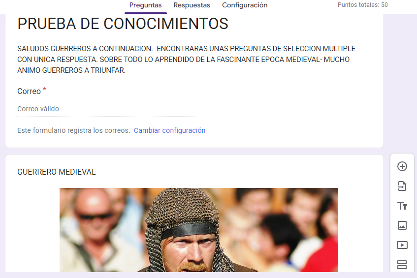

RESPONDE LAS SIGUIENTES PREGUNTAS CON UNICA RESPUESTA
HOLA GUERREROS. DEBES HACER CLICK EN EL ENLACE QUE TE DESPLEGARA UNA PRUEBA DE GOOGLE. AHORA MEDIRAS TUS CONOCIMIENTO SOBRE LA EPÓCA DE LA EDAD MEDIA. SI ALCANZAS LOS 50 PUNTOS SERA UNA NOTA DE 5. SI SACAS 30 PUNTOS LA NOTA SERA DE 3 LA MINIMA PARA APROBAR. AQUI NO DEBES ENVIAR NINGUN PANTALLAZO. PORQUE ESTE FORMULARIO DE GOOGLE GUARDA TUS RESPUESTAS.. SI GANAS LA PRUEBA SERAS CORONADO CABALLERO DE LA REALEZA. MUCHA FUERZA Y HASTA LA VICTORIA SIEMPRE.
ENLACE PARA REALIZAR LA PRUEBA
https://forms.gle/YMG11pxQMZ2ozJq99
